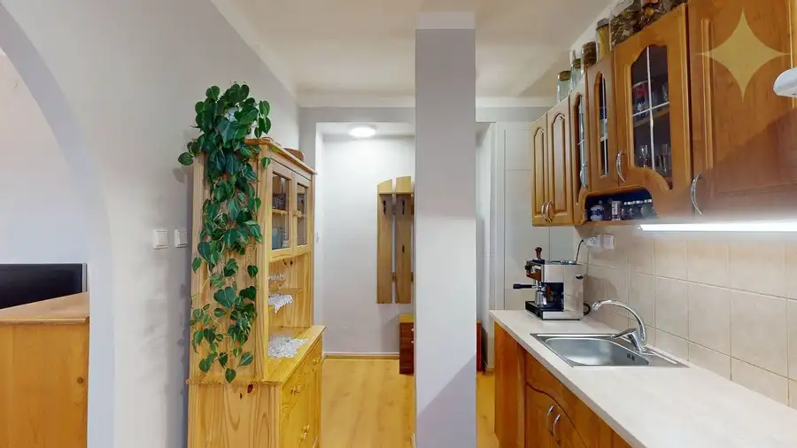
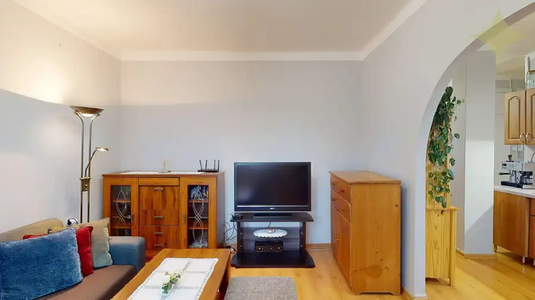
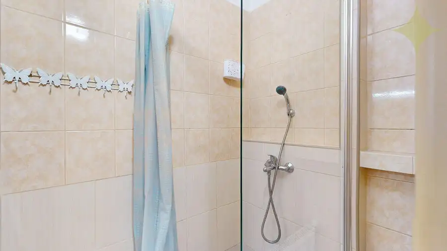
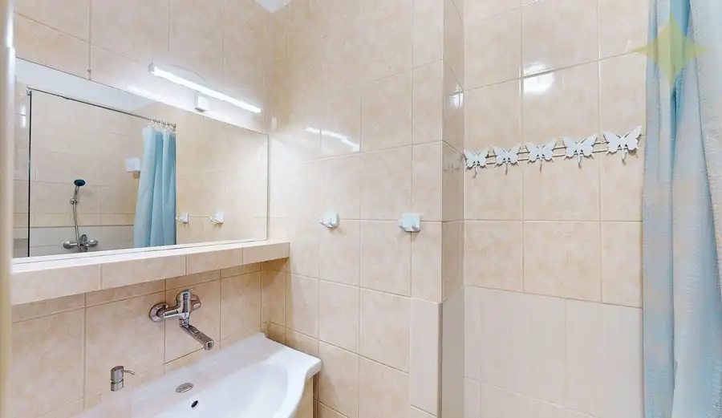
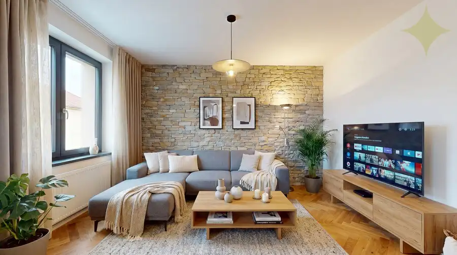
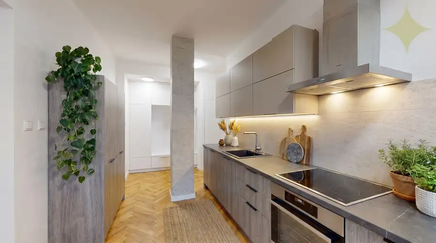
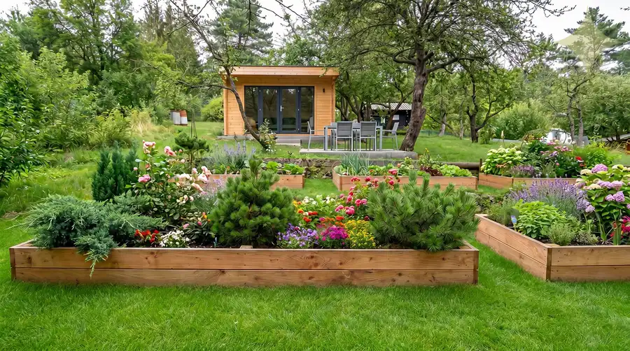
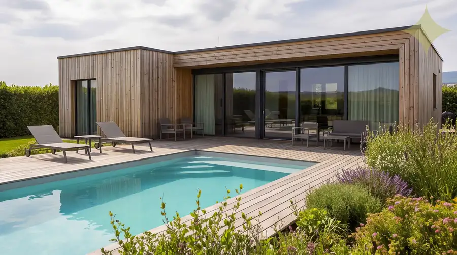
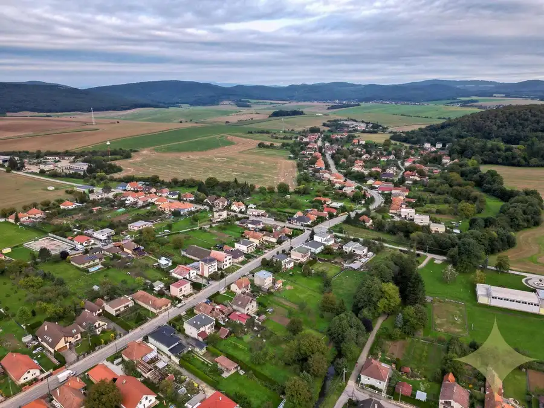

Na predaj 2i byt s loggiou v pokojnej lokalite mesta Rim. Sobota - 55,98 m²
Rimavská Sobota






- Dispozícia2-izbový
- Plocha55.98 m²
- Poschodie3. z 3
- StavKompletná rekonštrukcia
- VlastníctvoOsobné
O nehnuteľnosti
Vo výhradnom zastúpení majiteľa vám ponúkam na predaj 2i byt s loggiou v jednej z pokojnejších lokalít mesta Rimavská Sobota, na ulici Školská. Bytový tehlový dom je zrekonštruovaný so sedlovou strechou.Skôr než si prezriete fotodokumentáciu, pozývame vás, aby ste si pozreli video s vizualizáciou nehnuteľnosti. Kliknite na nasledujúce odkazy a získajte podrobný pohľad na interiér, dispozíciu a celkový vzhľad priestoru.VIDEO: https://youtu.be/gmB6CNOFIFMByt o rozlohe 55,98 m² sa nachádza na 3. poschodí z 3. Orientovaný je na juhovýchod. Postupne prešiel kompletnou rekonštrukciou, ktorá zahŕňala: plastové okná, murované jadro (samostatná kúpeľňa so sprchovacím kútom a WC). V minulom roku boli menené nové vstupné bezpečnostné dvere, interiérové dvere, elektrika, pracovná kuchynská doska, vodovodné batérie, umývadlo v kúpeľni, svietidlá, nové vypínače. Nový kombinovaný sporák (vykonaná revízia plynu) a el. digestor, nový náter v celom byte. V dvoch izbách, kuchyni a chodbe je na podlahách plávajúca podlaha. V kúpeľni a vo WC je dlažba. Ohrev vody je zabezpečený elektrickým bojlerom.Dispozícia bytu: vstupná chodba s novou priestrannou potravinovou skriňou, ktorá môže slúžiť aj, ako šatníková, samostatné WC, kúpeľňa, dve izby z toho je zo spálne výstup na loggiu, kuchyňa je prepojená s obývačkou. Na medziposchodí sa nachádza balkón so strieškou. Benefitom sú dve murované pivnice nachádzajúce sa v suteréne bytového domu. V okolí sa nachádza kompletná občianska vybavenosť: obchody, školy, škôlky, zástavky MHD, veľa zelene, detské ihriská. Lokalita ponúka aj výbornú pešiu dostupnosť do centra mesta. Kúpa tohto bytu je výbornou investičnou príležitosťou.Parkovanie je verejné bezproblémové, priamo pri bytovom dome vo vnútrobloku. Energetický certifikát bytového domu nebol predložený.Kontaktujte ma a dohodnite si osobnú obhliadku na telefónnom čísle +421 944 468 701 alebo emailom na denisa.vargova@premiumliving.skNáš hypotekárny špecialista vám pomôže s vybavením hypotekárneho úveru. Rada vám zabezpečím bezproblémový predaj, kúpu alebo prenájom Vašej nehnuteľnosti na profesionálnej úrovni spolu s kompletným servisom a poradenstvom. Spoločne nájdeme riešenie presne pre vás.Sledujte nás na našich sociálnych sieťach a webovej stránke.Váš partner pri hľadaní vysnívaného bývania!
Parametre
- Cena vrátane energií
- Nie
- Druh
- 2 izbový byt
- Dátum zverejnenia
- 03. 06. 2026
- Energetický certifikát budovy
- nie je
- Podlažie
- 3
- Počet nadzemných podlaží
- 3
- Stav nehnuteľnosti
- Kompletná rekonštrukcia
- Typ
- Predaj
- Typ konštrukcie
- Tehlová
- Umiestnenie
- Vstavba podkrovia
- Vlastníctvo
- Osobné
- Zariadenie
- Zariadené kompletne
- Úžitková plocha
- 55.98 m²
Kde to je


Mohlo by Vás zaujímať

PozemokNové 17 900 €Záhradka s krásnym výhľadom, BB - Fončorda. Banská Bystrica 351 m²
PozemokNové 96 000 €PREDAJ | Slnečný pozemok 3057 m² – Topoľčianky, okres Zlaté Moravce Topoľčianky 3057 m²
Komerčné priestoryNové 129 900 €Polyfunkčná budova s podkrovím, na bývanie aj podnikanie Klátova Nová Ves 675 m²